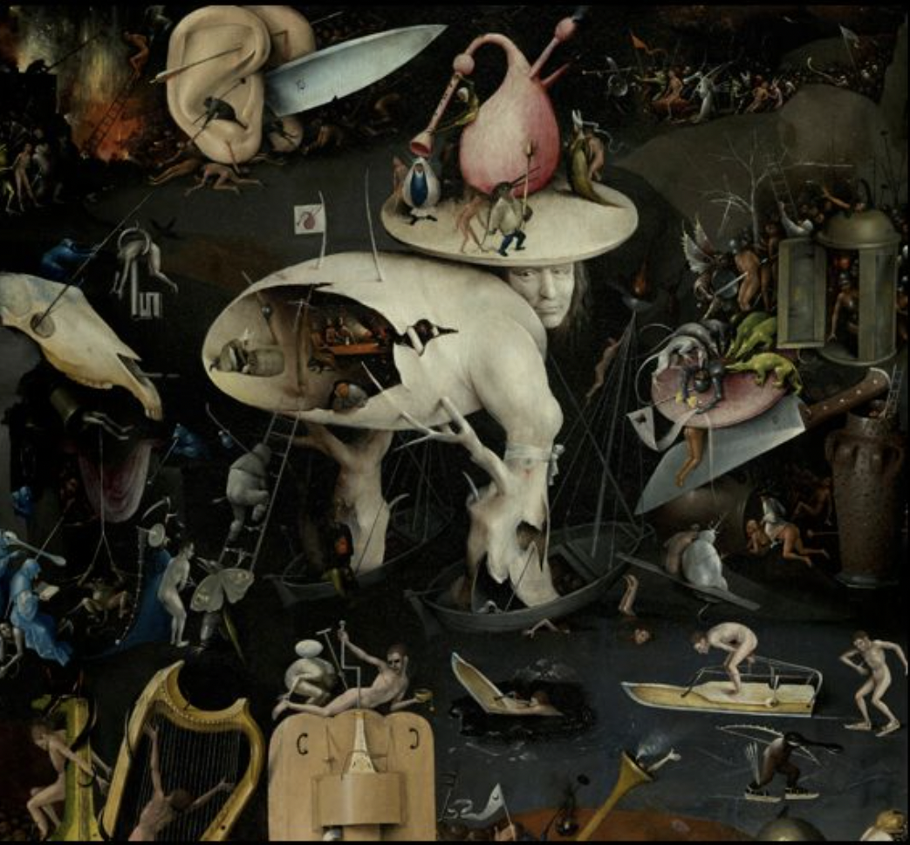
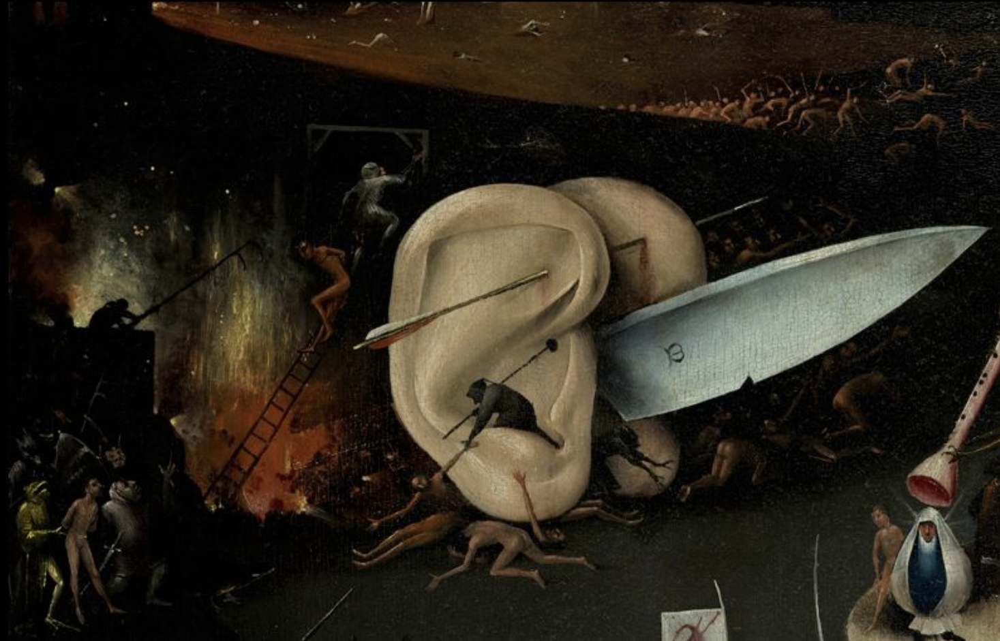

The middle ground: a metaphorical no-man's-land. the place of purgatory and judgement, where a man's life and inner impulses are weighed, and his penalties assigned.
The center portion of each panel is a transitional area abd the place of action where the divine intersects with the material. This panel is no exception.
Here, divine influences penetrated Earth: in the center portion of the cente rpanel. divine influences affect man's action; and in the right-hand panel, divine influences judge man's actions in response to its influce.
Our dead friends, racing towars hell and falling through thin ice on the way, have finally reached the place where their fate will be decided.
The house of judgment
In the tavern inside the Tree Man’s torso, a woman is pulling pints from a barrel, and we see a cross bow hanging from a tree. A man is sitting on a giant toad, a symbol of the devil.
The head of the Tree Man is surmounted by a large bagpipe, the instrument of sloth and idleness. The tiny flag on his eggshell back also shows a bagpipe. It may well have been sloth and alcohol abuse that caused the figures in the diabolical tavern to end up in hell.
Purgatory and judgement are no post-lifem outer event, but belong principally to the innder state of man; and they may not be an endpoint, but exist, rather, as an ongong process during life.
The entire scene takes place, metaphorically speaking, within the body of the artist himself. The act of judgement takes place in a divine circus just above his head, suggesting his thoughts at work. The way we think, out inner attitude, determines how we are judges. Bosch's purgatory does not exist, by default, after death; The implication is that purgatory and judgement play themselves out in the minds and bodies of men, as they live, here on earth.
The tree man's head is looking backwards, facing the good company, the pleasures of the flesh, and filling his belly. He does not see where he is, surrounded by violence, terror, and iniquity. His min is occupied by a merry-go-round of turning thoughts, one in which she continually judges humself.
The final scene of judgement, representing both purgatory -- a chance for redemption -- and the path to hell.
The journey has had its little amusements, but the fun is over now
